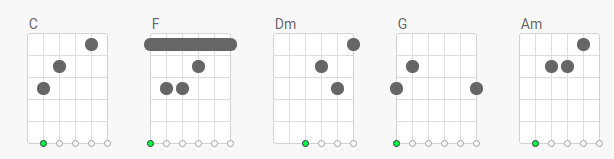
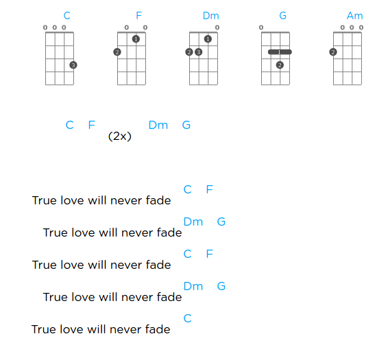

"True Love Never Fade" de Mark Knopfler



Tabbed By Mad Mart
Intro. | C F Dm G | C F Dm G |
Ref. | C F Dm G | C F Dm G |
True love will never fade
True love will never fade
True love will never fade
True love will never fade
True love will never fade
Vers. | F C Dm G C | F C Dm G | F G C |
I wonder if there's no forever
No walking hand in hand
Down a yellow brick road
To never never land
These days I get to where I'm going
Make it there eventually
Follow the trail of breadcrumbs
To where I'm meant to be
To where I'm meant to be
Vers. | F C Dm G C | F C Dm G C | F G C Am | F G |
e|-5---------------5--|
B|--6----5-------8----|
G|-5-----5-----5------|
D|-------5------------|
A|--------------------|
E|--------------------|
I don't know what brought you to me
That was up to you
There's so many come to see me
Who want their own tattoo
e|--------------------|
B|--6--6-----8-5------|
G|-5--5----5----------|
D|--------------------|
A|--------------------|
E|--------------------|
I fixed a needle in a holder
Laid my hand upon your spine
And there upon your shoulder
I drew the picture as your sign
e|----------------------5---7---5---7----5---|
B|-6---8--5---8-5--------7---8---7---8---5---|
G|-5---7--5-------7-5---5---7---5---7----5---|
D|-5---7--5----------------------------------|
A|-------------------------------------------|
E|-------------------------------------------|
When I think about us
I see the picture that we made
The picture to remind us
Ref. | F G | C F Dm G | C |
True love will never fade
True love will never fade
True love will never fade
True love will never fade
Solo. | F C | Dm G | C |
e|-787--5---------------------------------------------|
B|-----------556-66-55-------5------6-----------------|
G|-------------------------7---7--57----754------4-5--|
D|------------------------5--------------------7------|
A|----------------------------------------------------|
E|----------------------------------------------------|
Vers. | F C Dm G C | F C Dm G C | F G C Am | F G |
I worked the rowdies and daytrippers
Now and then I think of you
Any which way we're all shufflin'
Forward in the queue
They like to move my operation
They like to get me off the pier
And I dream I'm on a steamer
Pullin' out of here
When I think about us
I see a picture that we made
The picture to remind us
e|-----------------------------------|
B|-5------5----10----6--8------------|
G|--757---5---9-----5--7-------------|
D|--------5--------------------------|
A|-----------------------------------|
E|-----------------------------------|
Ref. | F G | C F Dm G | C | C F Dm G | C |…..
True love will never fade
True love will never fade
True love will never fade
True love will never fade
True love will never fade
True love will never fade